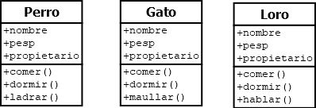
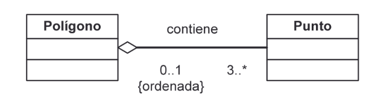

1º DAW - Programación - UT 4
Orientaciones
Orientaciones
Esta unidad de trabajo vamos a conocer el paradigma orientado a objetos, introduciendo de forma teórica los conceptos de Clases, objetos, métodos, propiedades y sus relaciones. Veremos el uso y la creación de todos estos conceptos con ejemplos.
Esta unidad es eminentemente teórica pero se plasmarán todos los conceptos en ejemplos y ejercicios.
Es necesario el conocimiento de las unidades anteriores.
4.1. Introducción
La programación Orientada a objetos se define como un paradigma de la programación, una manera de programar específica, donde se organiza el código en unidades denominadas clases, de las cuales se crean objetos que se relacionan entre sí para conseguir los objetivos de las aplicaciones. La programación Orientada a objetos (POO) es una forma especial de programar, más cercana a como expresaríamos las cosas en la vida real que otros tipos de programación.
Durante años, los programadores se han dedicado a construir aplicaciones muy parecidas que resolvían una y otra vez los mismos problemas. Para conseguir que los esfuerzos de los programadores puedan ser reutilizados se creó la posibilidad de utilizar módulos. El primer módulo existente fue la función, que somos capaces de escribir una vez e invocar cualquier número de veces.
Sin embargo, la función se centra mucho en aportar una funcionalidad dada, pero no tiene tanto interés con los datos. Es cierto que la función puede recibir datos como parámetros, pero los trata de una forma muy volátil. Simplemente hace su trabajo, procesando los parámetros recibidos y devuelve una respuesta.
Con la Programación Orientada a Objetos se buscaba unificar los datos y su gestión en una única estructura, creando unas mejores condiciones para poder desarrollar aplicaciones cada vez más complejas, sin que el código se volviera un caos. Además, se pretendía dar unas pautas para realizar las cosas de manera que otras personas puedan utilizarlas y adelantar su trabajo, de manera que consigamos que el código se pueda reutilizar.
La Programación Orientada a Objetos es un paradigma de programación que permite desarrollar aplicaciones complejas manteniendo un código más claro y manejable que otros paradigmas anteriores
4.1.1. Cómo se piensa en clases y objetos
Pensar en términos de objetos es muy parecido a cómo lo haríamos en la vida real. Por ejemplo, vamos a pensar en un coche para tratar de modelizarlo en un esquema de POO. Diríamos que el coche es el elemento principal que tiene una serie de características, como podrían ser el color, el modelo o la marca. Además, tiene una serie de funcionalidades asociadas, como pueden ser ponerse en marcha, parar o aparcar.
Pues en un esquema POO "el coche" sería lo que se conoce como "Clase". Sus características, como el color o el modelo, serían propiedades y las funcionalidades asociadas, como ponerse en marcha o parar, serían métodos.
La clase es como un libro que describe como son todos los objetos de un mismo tipo. La clase coche describe cómo son todos sus coches, qué propiedades tienen y qué funcionalidades deben poder realizar. A partir de una clase podemos crear cualquier número de objetos de esa clase. Un coche rojo que es de la marca Ford y modelo Fiesta, otro verde que es de la marca Seat y modelo Ibiza.
Identificar las clases es una de las tareas más importantes en la programación orientada a objetos y de esta tarea dependerá la calidad del producto final.
4.1.2. Resumen
- La POO es un paradigma de la programación que organiza el código en clases y objetos.
- Las clases son estructuras de datos que unifican la gestión de los datos y sus operaciones.
- Los objetos se instancian de una clase.
- Los objetos se comunican entre sí con mensajes.
- La aplicación se crea a partir de las iteraciones de los diferentes objetos entre sí.
- Es una forma más parecida a la vida real y a los procesos de ingeniería tradicionales.
- Permite reutilizar elementos entre las aplicaciones.
- Permite una mejor programación y mantenimiento.
4.2. Orígenes
Los conceptos de la programación orientada a objetos tienen origen en Simula 67, un lenguaje diseñado para hacer simulaciones, creado por Ole-Johan Dahl y Kristen Nygaard, del Centro de Cómputo Noruego en Oslo. En este centro se trabajaba en simulaciones de naves y la idea surgió al agrupar los diversos tipos de naves en diversas clases de objetos, siendo responsable cada clase de objetos de definir sus propios datos y comportamientos. Fueron refinados más tarde en Smalltalk, desarrollado en Simula en Xerox PARC (cuya primera versión fue escrita sobre Basic) pero diseñado para ser un sistema completamente dinámico en el cual los objetos se podrían crear y modificar “sobre la marcha” (en tiempo de ejecución) en lugar de tener un sistema basado en programas estáticos.
La programación orientada a objetos se fue convirtiendo en el estilo de programación dominante a mediados de los años ochenta, en gran parte debido a la influencia de C++, una extensión del lenguaje de programación C. Su dominio fue consolidado gracias al auge de las Interfaces gráficas de usuario, para las cuales la programación orientada a objetos está particularmente bien adaptada. En este caso, se habla también de programación dirigida por eventos. Las características de orientación a objetos fueron agregadas a muchos lenguajes existentes durante ese tiempo, incluyendo Ada, BASIC, Lisp y Pascal, entre otros.
La adición de estas características a los lenguajes que no fueron diseñados inicialmente para ellas condujo a menudo a problemas de compatibilidad y en la capacidad de mantenimiento del código. Los lenguajes orientados a objetos “puros”, por su parte, carecían de las características que muchos programadores se habían acostumbrado a utilizar. Para evitar este obstáculo, se hicieron muchas tentativas para crear nuevos lenguajes basados en métodos orientados a objetos, pero permitiendo algunas características imperativas de maneras “seguras”. El Eiffel de Bertrand Meyer fue un temprano y moderadamente acertado lenguaje con esos objetivos, pero ha sido reemplazado por Java, en gran parte debido a la aparición de Internet y a la implementación de la máquina virtual de Java en la mayoría de navegadores. PHP en su versión 5 se modificó, soportando una orientación completa a objetos, cumpliendo todas las características propias de la orientación a objetos.
4.3. Características de la POO
La POO posee muchas e importantes características que aporta con respecto a otros paradigmas para el desarrollo de aplicaciones, entre las que podemos destacar las siguientes:
- Permite enfocar los problemas de una forma mucho más intuitiva de lo que lo hacen otros paradigmas.
- Mientras que, en la programación estructurada datos y código están totalmente separados, en la POO se encuentran unidos en una única entidad.
- Se persigue trabajar con un modelo más cercano al mundo real en el que los diferentes objetos interaccionan entre sí.
- Permite generar programas modulares y muy escalables.
- La mejor opción para conseguir una buena experiencia de usuario.
- Su capacidad para permitir reutilizar código sin necesidad de reescribirlo nuevamente facilitó mucho la tarea de los programadores, que vieron en esta tendencia una gran oportunidad de rentabilizar el esfuerzo realizado.
Las propiedades de la POO
- Abstracción. Es un proceso mental por el que se ignoran las características de algo, quedándonos con lo que realmente nos importa. La abstracción es algo que hacemos constantemente los humanos en nuestro día a día. Si no lo realizáramos nuestro cerebro se colapsaría con toda la información que nos rodea. Una forma de manejar la complejidad del software es conseguir escribir código de tal manera que permita la abstracción.
- Encapsulamiento. Es el proceso por el cual se integran en una única estructura los datos y los mecanismos de gestión sobre esos datos, creando un todo. Una clase se compone tanto de variables (atributos) como de funciones y procedimientos (métodos).
- Ocultación. Hay una zona oculta al definir las clases (zona privada) que sólo es utilizada por esa clase y por alguna clase relacionada. Hay una zona pública (llamada también interfaz de la clase) que puede ser utilizada por cualquier parte del código. Una clase define la visibilidad de sus datos y métodos para que otras clases tengan acceso a ellos y tener un control total sobre la gestión de los mismos.
- Polimorfismo. Cada método de una clase puede tener varias definiciones distintas.
- Herencia. Una clase puede heredar propiedades (atributos y métodos) de otra creando de esta manera una jerarquía de clases. La herencia se puede hacer desde un único padre (herencia simple) o desde varios padres (herencia múltiple).
4.3.1. Ventajas y desventajas de la POO
|
Ventajas |
Desventajas |
|
Reusabilidad |
Cambio en la forma de pensar, más difícil |
|
Facilidad de desarrollo y mantenimiento |
Curva de aprendizaje más larga |
|
Facilidad de modificación |
Ejecución más lenta |
|
Aislamiento de los errores |
No todos los problemas se pueden resolver con este enfoque |
|
Reducción de código redundante |
No es productivo para tareas simples |
|
Fácil entendimiento de la lógica |
|
|
Cada componente tiene independencia de los demás |
|
4.4. Conceptos Fundamentales POO
Para hacer un desarrollo en POO debemos saber los conceptos fundamentales de la misma y los principios de programación. Según Robert C. Martin existen cinco principios básicos que constituyen la programación orientada a objetos.
- Principio de responsabilidad única. Cada clase debe tener una única responsabilidad, y esta responsabilidad debe estar contenida únicamente en esa clase. Cada responsabilidad es el eje y la razón de cambio. Para contener la propagación del cambio, se deben separar las responsabilidades.
- Principio de abierto-cerrado. Una entidad (clase, módulo, función, etc.) debe quedarse abierta para su extensión, pero cerrada para su modificación. Si un cambio impacta a varios módulos, entonces la aplicación no está bien diseñada. Se deben diseñar módulos que procuren no cambiar y así, reutilizar el código más adelante(extensión).
- Principio de sustitución. Si en alguna parte de un programa se utiliza una clase, y esta clase es extendida, se puede utilizar cualquiera de las clases hijas sin que existan modificaciones en el código. Cada clase que hereda de otra puede usarse como sus padres sin necesidad de conocer las diferencias entre ellas.
- Principio de segregación de interfaz. Hace referencia a que muchas interfaces cliente específicas son mejores que una interfaz de propósito general. Se aplica a una interfaz amplia y compleja para dividirla en otras más pequeñas y específicas, de tal forma que cada cliente use solo aquella que necesite pudiendo así ignorar al resto.
- Principio de inversión de dependencias. Los módulos de alto nivel no deben depender de los módulos de bajo nivel. Ambos deben depender de abstracciones.
4.4.1. Clases
Una clase describe un grupo de objetos que contienen una información similar (atributos) y un comportamiento común (métodos), este conjunto de objetos se denomina interfaz. El interfaz público es el conjunto de atributos y métodos accesibles a los demás objetos, es muy importante definirlo correctamente ya que si cambiamos la firma (parámetros y tipos de parámetros) dejaremos a los objetos que los utilicen inservibles.
Las definiciones comunes (nombre de la clase, los nombres de los atributos, y los métodos) se almacenan una única vez en cada clase, independientemente de cuántos objetos de esa clase estén presentes en el sistema. Una clase es como un molde a partir de cual se pueden crear objetos.
Antes de poder utilizar un objeto se debe definir la clase a la que pertenece, esa definición incluye:
- Propiedades. Las variables miembros de la clase.
- Métodos. Las funciones miembros de la clase.
- Visibilidad. Tanto atributos como métodos tienen una visibilidad con respecto a ella misma y a las demás clases del programa.
4.4.2. Propiedades o atributos
Una propiedad es una característica única del objeto, se asemejan a las variables de la programación estructurada, recoge información de la clase. La propiedad puede contener cualquier valor, incluido otro objeto de una clase. Ejemplos de propiedades serían: dni, nombre, apellido1, apellido2 y fecha_nacimiento.
Las propiedades pueden ser reales o generadas. Las propiedades reales almacenan valores en memoria, las propiedades generadas simulan una propiedad a través de un método. El valor de estas últimas propiedades es la capacidad de control que generan y la posibilidad de crear valores calculados complejos, no solo los almacenados.
4.4.3. Métodos
Una clase es una estructura de datos que incluye las operaciones necesarias para gestionarla. Esas operaciones son los llamados métodos. Un método no es más que una función o procedimiento de gestión de la clase que puede ser utilizado por esta o por otras. En el ejemplo anterior, el método sería Persona().
Todas las clases implementan métodos, pero hay dos que se implementarán siempre independientemente de que nosotros los creemos o no. Estos métodos son el constructor de la clase y el destructor. El constructor se usa en el momento que creamos un objeto y será llamado por el sistema una vez la estructura se haya creado en memoria para inicializarlo. Del mismo modo, el destructor es el último método que se ejecuta cuando hayamos solicitado la eliminación de un objeto para liberar recursos.
Actividad
Define gráficamente una clase Bombero considerando las siguientes propiedades de clase: nombre (Cadena), apellidos (Cadena), edad (Entero), casado (Booleano), especialista (Booleano).
Define un constructor (método con el mismo nombre que la clase) que reciba los parámetros necesarios para la inicialización y los métodos para poder establecer y obtener los valores de los atributos.
Utiliza DIA.
4.4.4. Objetos
Las clases son el molde que determina la estructura de “algo” que podemos utilizar. El objeto es la instanciación de una clase, es la creación de ese “algo”. Un objeto se crea a partir de la clase con los métodos y propiedades que esta determina. Un objeto de una clase es independiente de otro objeto de la clase y el estado de un objeto será diferente al de otro objeto de la misma (se conoce como estado de un objeto al valor de todas sus propiedades).
Dos objetos no serán nunca el mismo, incluso aunque su estado sea el mismo, a menos que apunten a la misma área de memoria (es lo que se denomina clonado del objeto).
Los objetos se crean y se destruyen de forma dinámica a través de las herramientas del lenguaje elegido, los utilizamos durante todo el desarrollo de la aplicación para guardar información, realizar acciones sobre ellos, etc.
Las clases se utilizarán cuando queramos acceder a datos o métodos compartidos entre todos los objetos de la clase.
Ejemplo
class Punto:
def __init__(self):
self.x = self.y = 0
p1 = Punto()
p1.x = 2
p2 = p1 # El mismo punto
print(p2.x)
p2.x = 3
print(p1.x)
p2 = Punto() # Ahora son dos distintos
p2.x = 4
print(p2.x)
print(p1.x)
4.4.5. Encapsulación y Ocultación
La clase forma un todo, aúna los datos y las operaciones en una única estructura de datos, permite la abstracción, la ocultación, el encapsulamiento, la herencia y el polimorfismo.
La encapsulación es el mecanismo por el que una clase agrupa todos los datos y operaciones dentro de una única estructura. Con la encapsulación un objeto puede ocultar la información que contiene al mundo exterior, o bien restringir el acceso a la misma para evitar ser manipulado de forma inadecuada, es lo que se denomina visibilidad.
La visibilidad permite que los métodos y propiedades de una clase sean utilizados de forma correcta por otros elementos del programa. La visibilidad puede ser pública (el signo + se utiliza para representar la visibilidad en una definición de clase), privada (-) o protegida (#). En caso de visibilidad pública cualquier parte del programa tendrá acceso, tanto la propia definición de clase como partes externas a la misma. Si la visibilidad es privada, solo la clase tiene acceso a dichos datos u operaciones, ni partes externas ni otras clases podrán utilizarla. Por último, en caso que sea protegida, tanto la propia clase, como cualquiera que herede de ella podrán utilizar el método o propiedad, estando prohibido el uso a otras clases o partes externas.

4.4.6. Abstracción
La abstracción es el mecanismo por el que podemos reducir la complejidad de la información, recogiendo solo aquella información que es relevante. Consiste en la generalización conceptual de los atributos y comportamiento de un determinado conjunto de objetos.
Pongamos un ejemplo para comprenderlo mejor. Queremos modelizar una clínica veterinaria en la que vamos a tratar varios tipos de animales: perros, gatos, loros, por simplicidad. Si hacemos un estudio llegamos a la conclusión que necesitamos tres clases diferentes para cada animal.

Como podemos observar casi todos los métodos y propiedades son similares, por lo que podemos abstraer lo importante de las tres clases en otra que llamaremos animal, dejando lo particular en cada una de ellas.
4.4.7. Herencia
La herencia es la capacidad que tienen las clases de usar las características ya declaradas en otras clases para su propia declaración. La herencia genera una relación de padres e hijos en las clases, una jerarquía, en la que las clases que heredan se sitúan en la parte inferior de la jerarquía, y las clases de las que se heredan en la parte superior.
Como vemos en el ejemplo, las clases perro, gato y loro sería las clases hijas, que heredan las propiedades y métodos de la clase padre animal. Esta jerarquía se puede extender todo lo que se necesite y crear todo lo compleja que el programa requiera.
La herencia se puede presentar en dos vertientes en función de cuántos padres se herede:
- Herencia simple. Cada clase hija solo tendrá un único ancestro o padre. Java tiene este tipo de jerarquía.
- Herencia múltiple. Cada clase hija podrá heredar de tantos ancestros como requiera. Python tiene este tipo de jarquía.
4.4.8. Relaciones entre las clases
Las clases, además de las jerarquías crean otro tipo de relaciones entre ellas en función del problema. Estas relaciones se reflejarán como propiedades o métodos dentro de las clases para poder realizar la relación. Las relaciones se describen adecuadamente a través UML y su diagrama de clases.
Asociación
Diremos que dos (o más) clases tiene una relación de asociación cuando una de ellas tenga que requerir o utilizar alguno de los servicios (es decir, acceder a alguna de las propiedades o métodos) de las otras.
La asociación presenta además una multiplicidad en la que indica cómo se relacionan las clases de la asociación. Podemos ver en la tabla anterior el significado de las cardinalidades.
Se pueden dar relaciones de asociación entre la misma clase como se ve a continuación.
Agregación
La agregación es una relación entre clases donde una clase forma parte de otra, pero no de forma exclusiva, pudiendo formar parte de otras relaciones de agregación.

En este ejemplo punto forma parte de polígono, pero nada le impide formar parte también de otra clase, por ejemplo, círculo.
Composición
La composición es una relación de agregación en la que las partes constituyentes forman parte de forma exclusiva de la relación, no pudiendo formar parte de otras relaciones de agregación o composición. Además, cada parte no tiene nada en común con las otras clases constituyentes, son disjuntas y solo existen asociadas a la relación.
Ejemplo
Considera que queremos representar mediante un programa los aviones que operan en un aeropuerto. Crea un esquema análogo para aviones. Define cuáles podrían ser las clases y cuáles podrían ser algunos objetos de una clase.
4.4.9. Sobrecarga
Una de las restricciones de los primeros lenguajes estructurados (fuertemente tipados) es que las funciones o procedimientos solo podían esperar el argumento de un tipo específico. De tal manera que, si una función esperaba como primer parámetro un entero, si se le pasaba cualquier otro tipo de parámetro generaba un error de ejecución.
Para solucionar este problema se definió en la POO la sobrecarga, o la creación de métodos que se nombran igual, pero difieren en la firma (número y tipos de parámetros), de tal manera que se determinará en tiempo de ejecución (enlace dinámico o unión tardía) al método a llamar en función de los tipos de los parámetros.
Los lenguajes dinámicamente tipados adolecen de la sobrecarga al admitir sus variables y parámetros cualquier tipo.
4.4.10. Polimorfismo y Enlace Dinámico
El polimorfismo es una relajación del sistema de tipos, de tal manera que una referencia a una clase (atributo, parámetro o declaración local o elemento de un vector) acepta direcciones de objetos de dicha clase y de sus clases derivadas (hijas, nietas, …)
Dicho de otra manera, la posibilidad que un objeto de una clase pueda ser utilizado como si fuera un objeto de la clase padre de la misma. El sistema de POO hace una “conversión” entre el objeto hijo y el objeto padre y se pueden utilizar de manera indistinta.
El único requerimiento para usar el polimorfismo es que hagamos uso de los métodos heredados exclusivamente para tratar los objetos hijos.
En este ejemplo, cualquier método que espere como parámetro una clase vehículo, podrá aceptar también cualquiera de sus hijas (coche, moto y bus) siempre que solo haga uso del interfaz (conjunto de métodos definidos en una clase) de la clase padre.
4.4.11. Mensajes
En la POO se denomina mensaje al uso que un objeto hace de un método de un segundo objeto facilitándole los parámetros esperados, y el primer objeto recoge los resultados. El símil con la programación estructurada es la llamada a una función o procedimiento.
El mecanismo de mensajes es la base de la comunicación de datos entre los objetos y de realización de tareas. Para que una aplicación funcione los objetos se tienen que intercambiar entre sí mensajes, haciendo que los objetos reaccionen a esos mensajes y efectúen las funciones para las que han sido programados.
4.5. Lenguajes
Un lenguaje es orientado a objetos si cumple entre otras características con lo siguiente:
- Soporta objetos que son abstracciones de datos con una interfaz de operaciones con nombre y un estado local oculto.
- Los objetos tienen un tipo asociado (la clase).
- Los tipos (clases) pueden heredar atributos de los supertipos (superclases)
La relación de lenguajes orientados a objetos es inmensa, podemos destacar C++, Java y Python como algunos exponentes de los mismos, pero en la siguiente dirección encontraremos una lista más amplia.
https://en.wikipedia.org/wiki/List_of_object-oriented_programming_languages
4.6. Ejercicios
1. Representa mediante un diagrama de clases la siguiente especificación relacionada con los alquileres de cámaras en una tienda de fotografía.
- La tienda alquila cámaras fotográficas analógicas.
- Las cámaras se caracterizan por su marca, modelo y soporte flash (si, no).
- Cada cámara es compatible con uno o más tipos de películas.
- Las películas se caracterizan por su marca, nombre, sensibilidad ISO (50, 100, 200, 400, 800, 1600) y formato (35 mm, 110 mm, 120 mm).
- Para cada marca con la que trabaja la tienda se conoce la dirección del servicio de reparación más cercano.
- La tienda dispone de varios ítems de cada modelo de cámara.
- Cada ítem tiene una pegatina con una referencia, y puede estar en la tienda, alquilado, con retraso o en reparación.
- Los clientes pueden tener un máximo de 1 cámara en alquiler.
2. Representa mediante un diagrama de clases la siguiente especificación sobre las personas que participan en una película
- De cada película se almacena el título, la sinopsis, el año, el género al que pertenece (drama, comedia, acción, terror, romance, aventura, scifi) y el país.
- Sobre las personas que participan en la película es necesario conocer el nombre, los apellidos, la fecha de nacimiento y la nacionalidad.
- Una persona puede participar en una película como actor, director, productor o guionista.
- Una película tiene al menos un director y un guionista.
- Una persona se considera actor si ha actuado al menos en una película.
- Una película puede tener asociados varios trailers que son editados por una o más personas. No puede existir el trailer de una película hasta que existe la película.
3. Representa mediante un diagrama de clases la siguiente especificación relacionada con un sistema para gestionar series:
- Las series se caracterizan por su título, año de inicio, sinopsis y género al que pertenece (acción, aventura, animación, comedia, documental, drama, horror, musical, romance, ciencia ficción)
- Las series se organizan en temporadas ordenadas que tienen una fecha de producción y una fecha de estreno de televisión a nivel mundial.
- Cada temporada está a su vez formada por capítulos ordenados que tienen un título, una duración y una sinopsis.
- Los usuarios se caracterizan por su nombre y apellidos, dirección de correo electrónico y fecha de nacimiento.
- Si un usuario ha visto algún capítulo de una temporada el sistema la marca como empezada, si ha visto todos los capítulos de la temporada la marca como vista y un usuario en cualquier momento puede dar una temporada como cancelada, es decir, indicar que la deja de seguir.
- Además, el sistema registra qué capítulos ha visto el usuario.
4. Representa mediante un diagrama de clases la siguiente especificación sobre una empresa:
- Una aplicación necesita almacenar información sobre empresas, sus empleados y sus clientes.
- Ambos se caracterizan por su nombre y edad.
- Los empleados tienen un sueldo bruto, los empleados que son directivos tienen una categoría, así como un conjunto de empleados subordinados.
- De los clientes además se necesita conocer su teléfono de contacto.
- La aplicación necesita mostrar los datos de empleados y clientes.
5. Construir un diagrama de clases para un hospital con un conjunto de pacientes y un conjunto de empleados sanitarios (médicos y enfermeros) siguiendo las siguientes especificaciones:
- Un paciente es atendido por uno o más médicos y es asistido por un grupo de enfermeros
- Cada paciente se describe por su número de historia clínica, su nombre y dirección
- En la base de datos se mantiene información del personal sanitario referente a su número de empleado, nombre y tipo. Para los médicos hay que indicar además su especialidad
- Para cada paciente se mantiene un registro de los análisis realizados identificados por un número de referencia, además se indica el tipo de análisis, la fecha en la que se realizó, el médico que solicitó el análisis, él o los enfermeros que realizaron la prueba y los resultados que se obtuvieron en la misma.
Resumen
{"id":"37c5d6b4-fd48-497e-9031-777594d599d7","title":"POO","mindmap":{"root":{"id":"99568463-53b0-4cc2-8449-2fa1638ad102","parentId":null,"text":{"caption":"POO","font":{"style":"normal","weight":"bold","decoration":"none","size":20,"color":"#000000"}},"offset":{"x":0,"y":0},"foldChildren":false,"branchColor":"#000000","children":[{"id":"eee0d49e-a889-4d6d-8105-de92b9ec1778","parentId":"99568463-53b0-4cc2-8449-2fa1638ad102","text":{"caption":"Orígenes de la POO","font":{"style":"normal","weight":"normal","decoration":"none","size":15,"color":"#000000"}},"offset":{"x":-305,"y":117},"foldChildren":false,"branchColor":"#fb8bdd","children":[]},{"id":"d146f064-58a4-4d9e-9360-038d6eb89200","parentId":"99568463-53b0-4cc2-8449-2fa1638ad102","text":{"caption":"Características","font":{"style":"normal","weight":"normal","decoration":"none","size":15,"color":"#000000"}},"offset":{"x":-234.33333333333334,"y":197.66666666666666},"foldChildren":false,"branchColor":"#ffb3d2","children":[]},{"id":"a0a3c3fd-3f6b-4b7a-8326-28552923e423","parentId":"99568463-53b0-4cc2-8449-2fa1638ad102","text":{"caption":"Propiedades","font":{"style":"normal","weight":"normal","decoration":"none","size":15,"color":"#000000"}},"offset":{"x":82.66666666666667,"y":118},"foldChildren":false,"branchColor":"#f40a37","children":[{"id":"be44e23a-360e-4ecf-95f2-ec12677ebc6b","parentId":"a0a3c3fd-3f6b-4b7a-8326-28552923e423","text":{"caption":"Abstracción","font":{"style":"normal","weight":"normal","decoration":"none","size":15,"color":"#000000"}},"offset":{"x":186.66666666666666,"y":-107.66666666666667},"foldChildren":false,"branchColor":"#f40a37","children":[]},{"id":"e78cea4b-6e89-4b30-b8f3-95163a51a4da","parentId":"a0a3c3fd-3f6b-4b7a-8326-28552923e423","text":{"caption":"Encapsulamiento","font":{"style":"normal","weight":"normal","decoration":"none","size":15,"color":"#000000"}},"offset":{"x":155,"y":-50},"foldChildren":false,"branchColor":"#f40a37","children":[]},{"id":"e1e386e2-47ea-434a-96ae-1a414404cca9","parentId":"a0a3c3fd-3f6b-4b7a-8326-28552923e423","text":{"caption":"Ocultación","font":{"style":"normal","weight":"normal","decoration":"none","size":15,"color":"#000000"}},"offset":{"x":173,"y":2},"foldChildren":false,"branchColor":"#f40a37","children":[]},{"id":"81bdb70e-00f0-4f91-94cf-10877034cfd2","parentId":"a0a3c3fd-3f6b-4b7a-8326-28552923e423","text":{"caption":"Polimorfismo","font":{"style":"normal","weight":"normal","decoration":"none","size":15,"color":"#000000"}},"offset":{"x":153,"y":51},"foldChildren":false,"branchColor":"#f40a37","children":[]},{"id":"fd4cd88b-3f38-4d1f-9091-e57c12c7a7a3","parentId":"a0a3c3fd-3f6b-4b7a-8326-28552923e423","text":{"caption":"Herencia","font":{"style":"normal","weight":"normal","decoration":"none","size":15,"color":"#000000"}},"offset":{"x":141.33333333333334,"y":103},"foldChildren":false,"branchColor":"#f40a37","children":[]}]},{"id":"b47ffa02-2a94-4956-b802-5a14ab3dafcd","parentId":"99568463-53b0-4cc2-8449-2fa1638ad102","text":{"caption":"Principios","font":{"style":"normal","weight":"normal","decoration":"none","size":15,"color":"#000000"}},"offset":{"x":123,"y":-256},"foldChildren":false,"branchColor":"#5d1593","children":[{"id":"a9ebdf00-2d07-405a-8c93-07f0e3a2c30d","parentId":"b47ffa02-2a94-4956-b802-5a14ab3dafcd","text":{"caption":"Responsabilidad única","font":{"style":"normal","weight":"normal","decoration":"none","size":15,"color":"#000000"}},"offset":{"x":127.66666666666667,"y":-118},"foldChildren":false,"branchColor":"#5d1593","children":[]},{"id":"84df8b1b-5555-485d-9c7d-4ab95c84feec","parentId":"b47ffa02-2a94-4956-b802-5a14ab3dafcd","text":{"caption":"Abierto - cerrado","font":{"style":"normal","weight":"normal","decoration":"none","size":15,"color":"#000000"}},"offset":{"x":154,"y":-50.333333333333336},"foldChildren":false,"branchColor":"#5d1593","children":[]},{"id":"b844eccf-776d-4ecd-ba8f-35c1fa2fdd02","parentId":"b47ffa02-2a94-4956-b802-5a14ab3dafcd","text":{"caption":"Sustitución","font":{"style":"normal","weight":"normal","decoration":"none","size":15,"color":"#000000"}},"offset":{"x":189.66666666666666,"y":1},"foldChildren":false,"branchColor":"#5d1593","children":[]},{"id":"b79bd3f3-6884-4ef0-89c0-85bab662e179","parentId":"b47ffa02-2a94-4956-b802-5a14ab3dafcd","text":{"caption":"Segregación de interfaz","font":{"style":"normal","weight":"normal","decoration":"none","size":15,"color":"#000000"}},"offset":{"x":162,"y":52.333333333333336},"foldChildren":false,"branchColor":"#5d1593","children":[]},{"id":"ffa7ea41-a845-4214-aa13-8807c33c002b","parentId":"b47ffa02-2a94-4956-b802-5a14ab3dafcd","text":{"caption":"Inversión de dependencias","font":{"style":"normal","weight":"normal","decoration":"none","size":15,"color":"#000000"}},"offset":{"x":164,"y":116},"foldChildren":false,"branchColor":"#5d1593","children":[]}]},{"id":"d2441dee-a1d3-4b98-9fc8-d958019d8976","parentId":"99568463-53b0-4cc2-8449-2fa1638ad102","text":{"caption":"Conceptos","font":{"style":"normal","weight":"normal","decoration":"none","size":15,"color":"#000000"}},"offset":{"x":-148,"y":-228},"foldChildren":false,"branchColor":"#03835d","children":[{"id":"957336f4-afd1-4254-9f0a-b0964e26698d","parentId":"d2441dee-a1d3-4b98-9fc8-d958019d8976","text":{"caption":"Clase","font":{"style":"normal","weight":"normal","decoration":"none","size":15,"color":"#000000"}},"offset":{"x":-143,"y":-98},"foldChildren":false,"branchColor":"#03835d","children":[]},{"id":"edfa4c04-6696-4e99-8092-dd59c216a872","parentId":"d2441dee-a1d3-4b98-9fc8-d958019d8976","text":{"caption":"Métodos","font":{"style":"normal","weight":"normal","decoration":"none","size":15,"color":"#000000"}},"offset":{"x":-162,"y":-3},"foldChildren":false,"branchColor":"#03835d","children":[]},{"id":"52e21abe-c9f5-4ef1-b44c-eebf78f96847","parentId":"d2441dee-a1d3-4b98-9fc8-d958019d8976","text":{"caption":"Propiedades","font":{"style":"normal","weight":"normal","decoration":"none","size":15,"color":"#000000"}},"offset":{"x":-155,"y":-48},"foldChildren":false,"branchColor":"#03835d","children":[]},{"id":"1e79889a-e1e2-4f7b-8efc-b4405bdf6111","parentId":"d2441dee-a1d3-4b98-9fc8-d958019d8976","text":{"caption":"Objeto","font":{"style":"normal","weight":"normal","decoration":"none","size":15,"color":"#000000"}},"offset":{"x":-160,"y":52},"foldChildren":false,"branchColor":"#03835d","children":[]},{"id":"e03ead21-e20e-4377-af3b-0320f9af7f3f","parentId":"d2441dee-a1d3-4b98-9fc8-d958019d8976","text":{"caption":"Relaciones entre clases","font":{"style":"normal","weight":"normal","decoration":"none","size":15,"color":"#000000"}},"offset":{"x":-211,"y":102},"foldChildren":false,"branchColor":"#03835d","children":[{"id":"c29e21c3-b920-404d-8740-17372241e69b","parentId":"e03ead21-e20e-4377-af3b-0320f9af7f3f","text":{"caption":"Asociación","font":{"style":"normal","weight":"normal","decoration":"none","size":15,"color":"#000000"}},"offset":{"x":-93,"y":-28},"foldChildren":false,"branchColor":"#03835d","children":[]},{"id":"78d7ccd0-67a4-4ace-8a90-2e15c8ee02ce","parentId":"e03ead21-e20e-4377-af3b-0320f9af7f3f","text":{"caption":"Agregación","font":{"style":"normal","weight":"normal","decoration":"none","size":15,"color":"#000000"}},"offset":{"x":-119,"y":21},"foldChildren":false,"branchColor":"#03835d","children":[]},{"id":"2b9421ce-67f7-48f2-8457-891bd08261cd","parentId":"e03ead21-e20e-4377-af3b-0320f9af7f3f","text":{"caption":"Composición","font":{"style":"normal","weight":"normal","decoration":"none","size":15,"color":"#000000"}},"offset":{"x":-128,"y":75},"foldChildren":false,"branchColor":"#03835d","children":[]}]},{"id":"eb21a9e0-01a0-49dd-a297-032e173e0454","parentId":"d2441dee-a1d3-4b98-9fc8-d958019d8976","text":{"caption":"Sobrecarga","font":{"style":"normal","weight":"normal","decoration":"none","size":15,"color":"#000000"}},"offset":{"x":-144,"y":170.33333333333334},"foldChildren":false,"branchColor":"#03835d","children":[]},{"id":"6af8cabe-14af-4efc-beac-e67eca7a2eb2","parentId":"d2441dee-a1d3-4b98-9fc8-d958019d8976","text":{"caption":"Enlace dinámico","font":{"style":"normal","weight":"normal","decoration":"none","size":15,"color":"#000000"}},"offset":{"x":-149.33333333333334,"y":217.33333333333334},"foldChildren":false,"branchColor":"#03835d","children":[]},{"id":"69c7553a-949f-411e-9356-76836a75f606","parentId":"d2441dee-a1d3-4b98-9fc8-d958019d8976","text":{"caption":"Mensajes","font":{"style":"normal","weight":"normal","decoration":"none","size":15,"color":"#000000"}},"offset":{"x":-104,"y":273.3333333333333},"foldChildren":false,"branchColor":"#03835d","children":[]}]},{"id":"d7eac5b8-3723-49d5-904a-8ffebd9d1f40","parentId":"99568463-53b0-4cc2-8449-2fa1638ad102","text":{"caption":"Introducción","font":{"style":"normal","weight":"normal","decoration":"none","size":15,"color":"#000000"}},"offset":{"x":46.666666666666664,"y":218.66666666666666},"foldChildren":false,"branchColor":"#ff7869","children":[]}]}},"dates":{"created":1640019226861,"modified":1640019733357},"dimensions":{"x":4000,"y":2000},"autosave":false}
...
Obra publicada con Licencia Creative Commons Reconocimiento Compartir igual 4.0